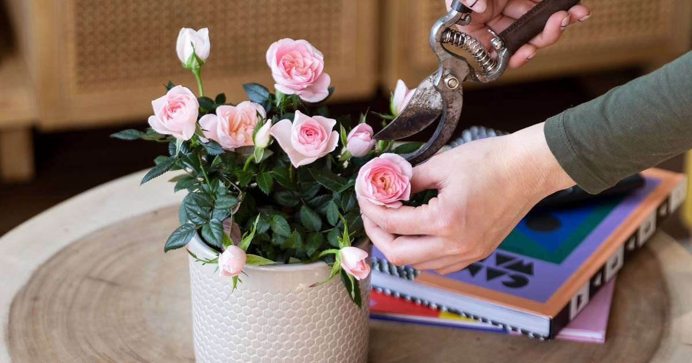
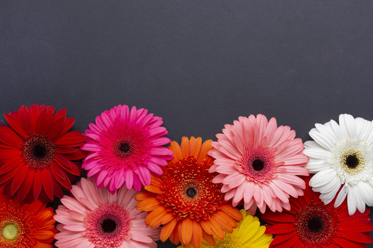
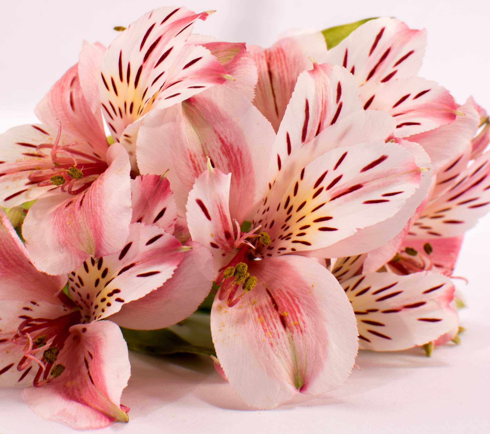
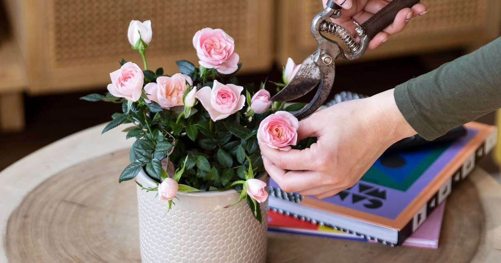
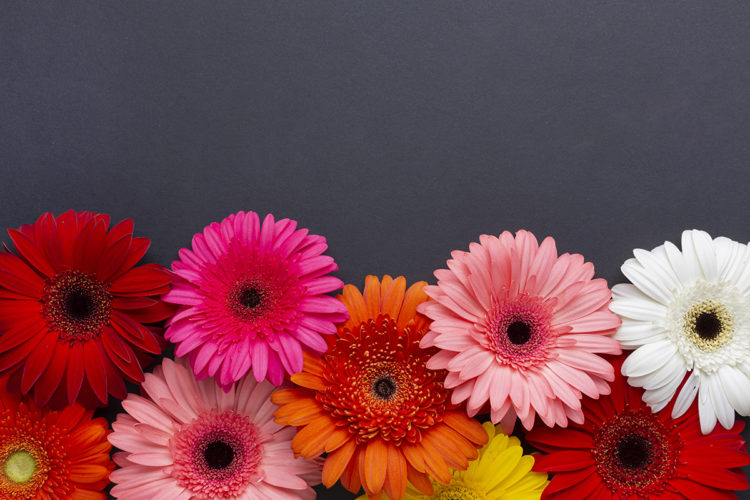
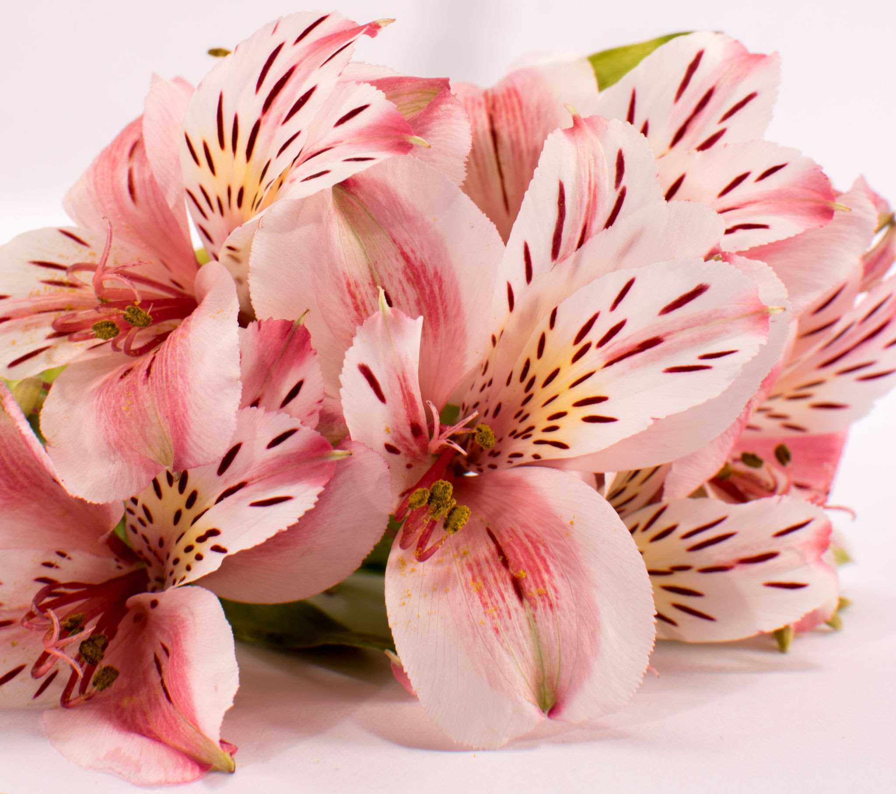

Mis flores favoritas
| Nombre | Nombre científico | Color | Foto |
|---|---|---|---|
| Rosa mini | Rosa polyantha | Rosa |  |
| Gerbera | Transvaal daisy | Rosa claro |  |
| Tulipan | Tulipa spp | Rojo |  |
| Astromelia | Alstroemeria | Rosa |  |
| Nombre | Nombre científico | Color | Foto |
|---|---|---|---|
| Rosa mini | Rosa polyantha | Rosa |  |
| Gerbera | Transvaal daisy | Rosa claro |  |
| Tulipan | Tulipa spp | Rojo | |
| Astromelia | Alstroemeria | Rosa |  |